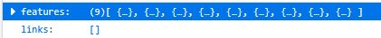
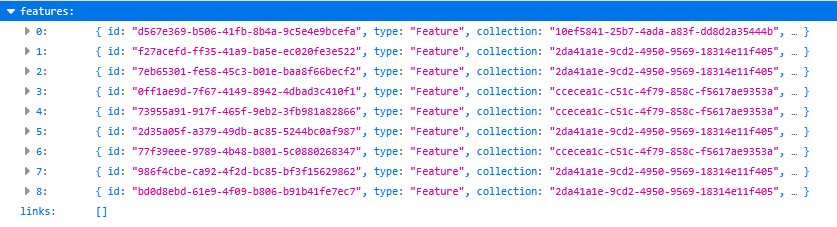
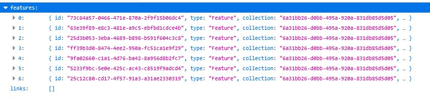
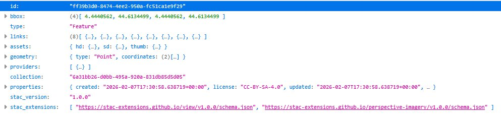

Il n'est pas facile de s'y retrouver dans la documentation de l'api de Panoramax mais, comme souvent, quand on a extrait ce qu'on voulait, l'utilisation est très simple.
Pour faciliter le travail de ceux qui voudraient suivre mon exemple, j'ai réuni ci-dessous les quelques points essentiels.
La recherche des photos se fait au moyen de l'api à l'adresse https://api.panoramax.xyz/api/ pour le métacatalogue (ou https://panoramax.openstreetmap.fr/api et https://panoramax.ign.fr/api pour les instances OSM ou IGN).
En Javascript cette recherche tient en quelques lignes pour définir une fonction asynchrone
async function px_xxx() {
const apiUrl =
const res = await fetch(apiUrl);
const data = await res.json();
return data;
}
qui retourne un objet JSON.
Pour récupérer les éléments contenus dans une zone rectangulaire (bbox) la syntaxe est:
apiUrl = "https://api.panoramax.xyz/api/search?bbox=${bboxString}&limit=${limit}"
avec les paramètres
La réponse est un objet JSON contenant


A partir de l'identifiant d'une collection, on peut récupérer les élements qui en font partie . La syntaxe est:
apiUrl = "https://api.panoramax.xyz/api/search?collections=${collectionId}&sortby=ts&limit=${limit}
cette fonction renvoie aussi un objet contenant un tableau dans lequel tous les éléments ont le même identifiant de collection

L'objet JSON correspondant à un élément (feature) peut être lu directement à partir des tableaux de features.

Beaucoup de choses et pas mal de redondances. Parmi tout cela, les paires clef - valeur retenues pour cette utilisation sont :
Ne cherchez pas de logique quelconque pour les identifiants (de feature ou de collection) utilisés par Panoramax. Les UUID (Universally_unique_identifier) sont simplement des nombres binaires sur 128 bits créés au hasard et représentés par un codage standard. Voir le détail sur Wikipedia.
Losqu'une photo est affichée, pour passer à la suivante ou la précédente, il semblerait logique d'utiliser les liens next ou prev mais ces liens rappellent l'api pour recharger l'élément ce qui ralentit l'affichage.
Pour les séquences "normales" pour cette application (ne dépassant pas les 1000 éléments), au premier clic sur un des éléments, tous les autres éléments sont chargés dans un tableau sous forme d'objets json. Il est donc plus rapide de passer à l'élément suivant ou précédent dans le tableau et d'accéder directement au stockage de la photo par le lien assets.sd.
Cependant, certaines séquences, sur des routes en particulier, peuvent avoir plusieurs milliers d'éléments.
Le chargement de la collection se faisant à partir du premier élément, il peut arriver que les 1000 premiers éléments soient en dehors de la zone d'intérêt. Dans ce cas les éléments ne sont pas chargés et la séquence n'est pas affichée en bleu mais on peut quand même se déplacer dans la séquence. Le code utilise alors les liens next et prev.
La page est basée sur Leaflet Version 1.6.0.
Pour le code complet, les sources sont ici . .
Page mise à jour le 07/08/2026